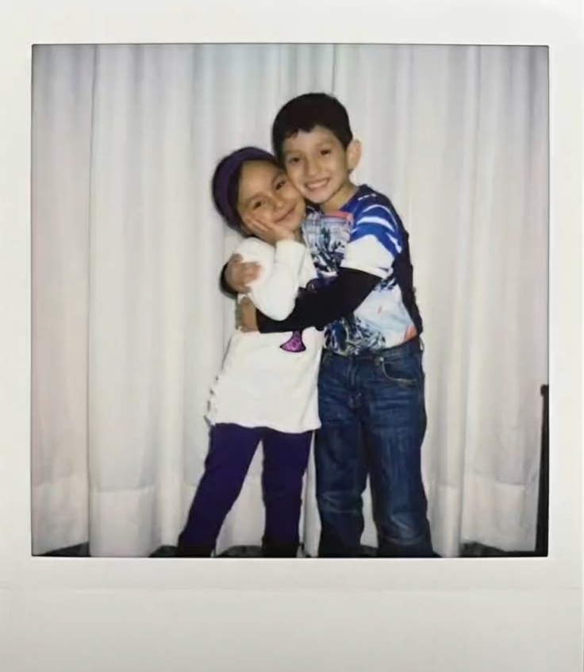

Última función
Gracias
Por 1 año, 10 meses que valieron la pena.
Yellow
Coldplay
Look at the stars, look how they shine for you
And everything you do
Yeah, they were all yellow
I came along, I wrote a song for you
And all the things you do
And it was called Yellow
So then I took my turn
Oh what a thing to have done
And it was all Yellow
Your skin, oh yeah your skin and bones
Turn into something beautiful
You know, you know I love you so
You know I love you so
I swam across, I jumped across for you
Oh what a thing to do
'Cause you were all Yellow
I drew a line, I drew a line for you
Oh what a thing to do
And it was all Yellow
Your skin, oh yeah your skin and bones
Turn into something beautiful
You know, for you I'd bleed myself dry
For you I'd bleed myself dry
It's true, look how they shine for you
Look how they shine for you
Look how they shine
Look at the stars, look how they shine for you
And everything you do
Yeah, they were all yellow



Gracias por todo lo que fuimos ♥ — M.